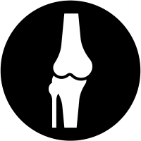
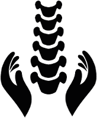
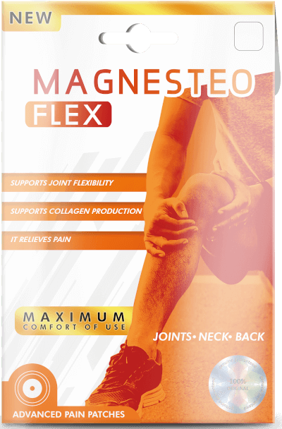

Wyeliminuj ból i odzyskaj pełną sprawność ruchową w zaledwie 21 dni
Biomedyczne plastry Magnesteo Flex wykorzystujące współczesne dokonania magnetoterapii to potężna broń eliminująca wszelkie zwyrodnienia stawów i kręgosłupa!

Błyskawiczne odżywienie komórek kostnych i wzmocnienie stawów
Natychmiastowe uśmierzanie bólu kolan, bioder, nadgarstków i kręgosłupa
Uwolnienie od "chrupania", trzeszczenia i strzykania w kościach już po 4-5 dniach

Miejscowa regeneracja struktury stawów kolanowych, biodrowych, barkowych już po 4 zastosowaniach
